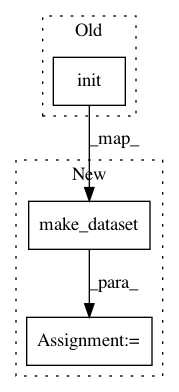

8438f3a6ac4e7e0a52188ee4f94f75fc91889469,opennmt/models/sequence_classifier.py,SequenceClassifier,_build_dataset,#SequenceClassifier#Any#Any#Any#Any#,44
Before Change
def _build_dataset(self, mode, batch_size, features_file, labels_file=None):
features_dataset = tf.contrib.data.TextLineDataset(features_file)
self.embedder.init()
features_dataset = features_dataset.map(lambda x: self.embedder.process(x))
if labels_file is None:
dataset = features_dataset
After Change
return cond
def _build_dataset(self, mode, batch_size, features_file, labels_file=None):
features_dataset = self.embedder.make_dataset(features_file)
if labels_file is None:
dataset = features_dataset
padded_shapes = self.embedder.padded_shapes
In pattern: SUPERPATTERN
Frequency: 3
Non-data size: 3
Instances
Project Name: OpenNMT/OpenNMT-tf
Commit Name: 8438f3a6ac4e7e0a52188ee4f94f75fc91889469
Time: 2017-08-11
Author: guillaume.klein@systrangroup.com
File Name: opennmt/models/sequence_classifier.py
Class Name: SequenceClassifier
Method Name: _build_dataset
Project Name: OpenNMT/OpenNMT-tf
Commit Name: 8438f3a6ac4e7e0a52188ee4f94f75fc91889469
Time: 2017-08-11
Author: guillaume.klein@systrangroup.com
File Name: opennmt/models/sequence_to_sequence.py
Class Name: SequenceToSequence
Method Name: _build_dataset
Project Name: OpenNMT/OpenNMT-tf
Commit Name: 8438f3a6ac4e7e0a52188ee4f94f75fc91889469
Time: 2017-08-11
Author: guillaume.klein@systrangroup.com
File Name: opennmt/models/sequence_tagger.py
Class Name: SequenceTagger
Method Name: _build_dataset